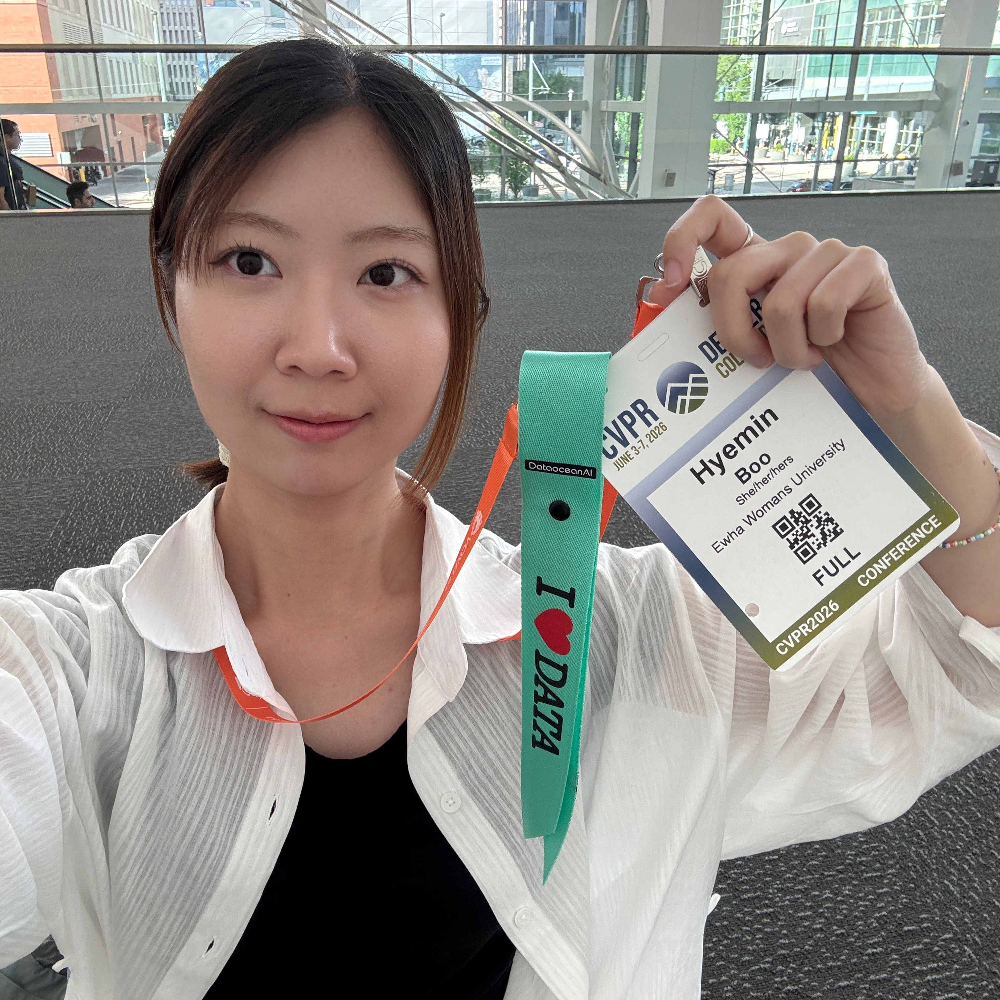
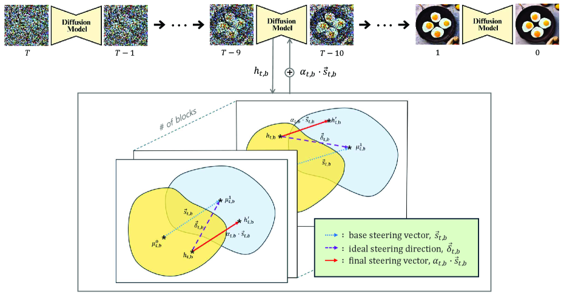

|
Hyemin Boo I'm an M.S. student at Ewha Womans University, affiliated with the Multimodal AI Lab, advised by Prof. Jiyoung Lee. I received my B.S. in Artificial Intelligence from Ewha Womans University. My research interests lie in multimodal AI and agentic AI, with a particular focus on building intelligent systems that can understand, reason, and interact across diverse modalities. I am also broadly interested in robotics and physical AI, and aspire to contribute at the intersection of these areas in the future. I welcome opportunities for collaboration and discussion. Feel free to reach out via email (hyeminb@ewha.ac.kr) or LinkedIn! Email / Google Scholar / Github / LinkedIn |
 |
{kind=link}
News
|
Publications
CountSteer: Steering Attention for Object Counting in Diffusion Models
Hyemin Boo*, Hyoryung Kim*, Myungjin Lee*, Seunghyeon Lee*, Jiyoung Lee, Jang-Hwan Choi, Hyunsoo Cho† Workshop on RSD @ AAAI, 2026 arXiv * This work originated from my undergraduate capstone project. |
Education
|
Honors & Awards
|
|
Template from Jon Barron. |